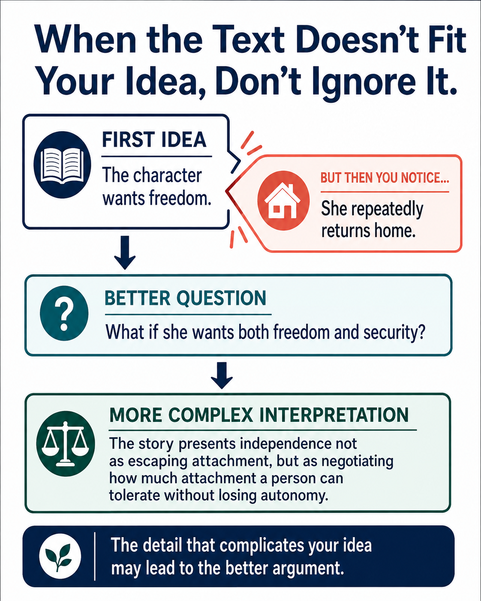

Before You Practice: Let the Text Complicate Your Idea
Your first interpretation does not have to explain everything perfectly. A working interpretation gives you something to test. When another detail does not fit, the goal is not to hide it or immediately throw your whole idea away.

Read the full text version of this infographic
When the Text Doesn't Fit Your Idea, Don't Ignore It
The graphic shows how evidence that complicates an initial interpretation can lead to a stronger argument.
Takeaway: The detail that complicates your idea may lead to the better argument.
The graphic emphasizes that contradictory evidence does not necessarily mean an interpretation has failed. It can help the reader revise a simple first idea into a more nuanced interpretation.
What Kind of Evidence Might Complicate a Claim?
Do Not Swing From One Extreme to the Other
The locked gate represents protection.
During an emergency, the same gate prevents a character from leaving.
The gate only represents imprisonment.
The gate represents protection, but the emergency reveals how easily safety can become restriction when someone else controls whether it opens.
The goal is not to replace one absolute statement with another. Stronger interpretation often comes from explaining the relationship between two truths.
Useful Questions When Something Does Not Fit
- Is this an exception to the pattern, or does it change what I thought the pattern was?
- Can two apparently conflicting ideas both be true?
- Does the meaning change depending on the moment, character, or point of view?
- What does the contradiction reveal about a character's motives or limits?
- Does the text present a gain that also has a cost?
- Do I need to make my claim less absolute or more precise?
Now Practice
Notice evidence that does not fit a first interpretation, then choose the revision that preserves what still works while making room for the new detail.
Complicate the Interpretation Practice
FIRST INTERPRETATION
NEW EVIDENCE
What should the writer do next?